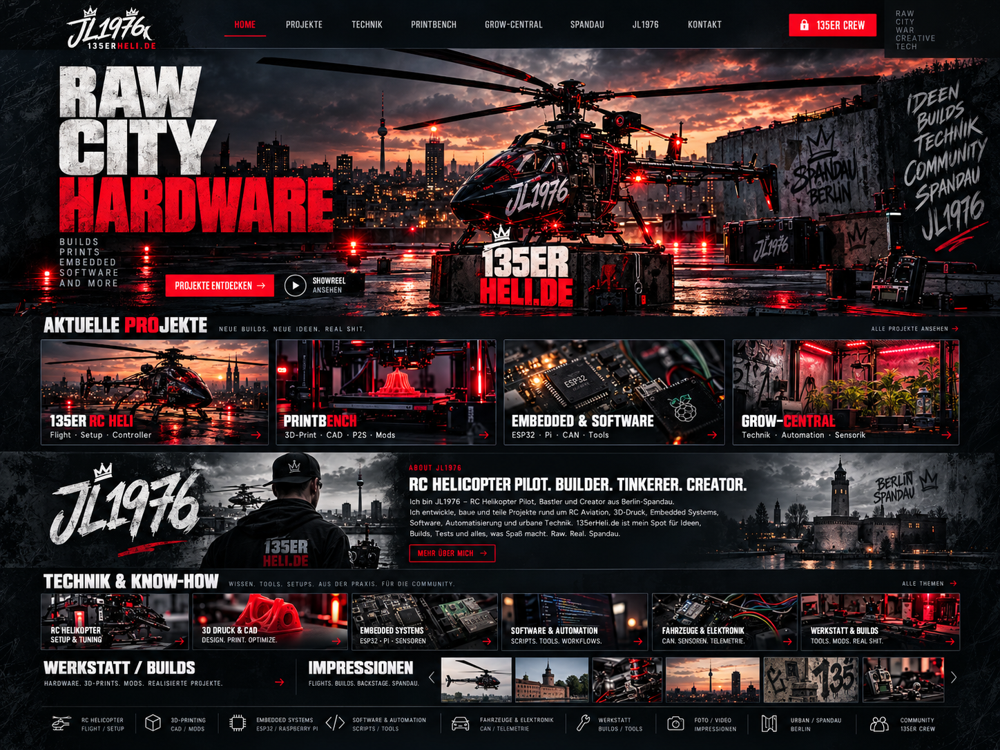

135erHeli.de – JL1976
RC Helicopter Pilot. Builder. Tinkerer. Creator. Projekte aus Berlin-Spandau: RC Helicopter Setup und Tuning, 3D-Druck und CAD, Embedded Systems mit ESP32 und Raspberry Pi, Software und Automation, Fahrzeuge und Elektronik, Werkstatt und Builds, Printbench, Grow-Central und 135er Spandau Strike.